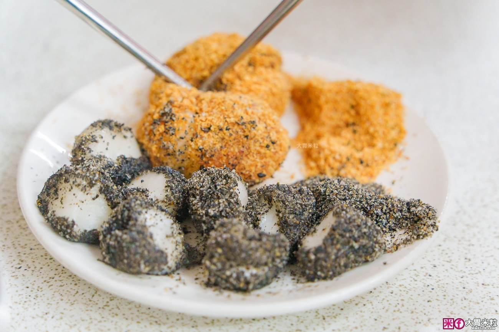
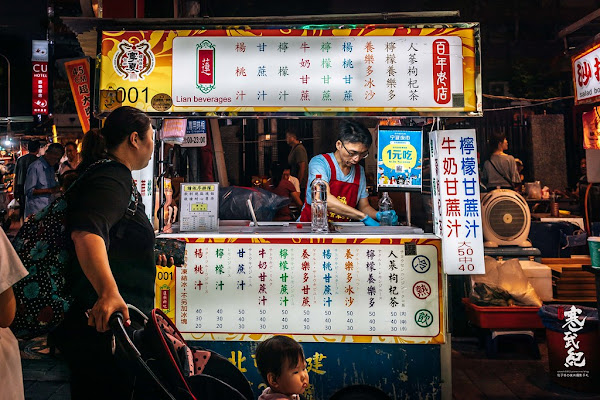
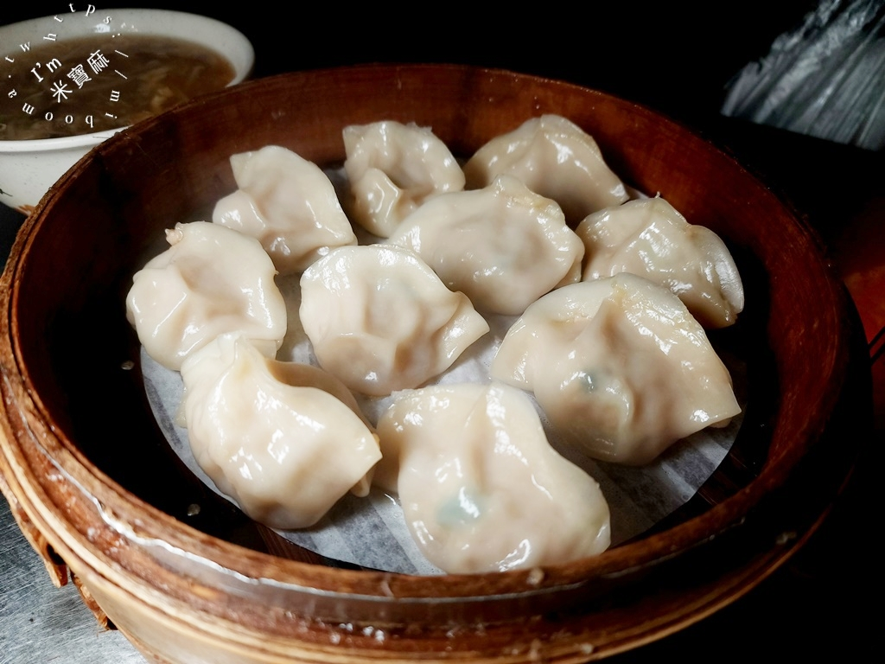
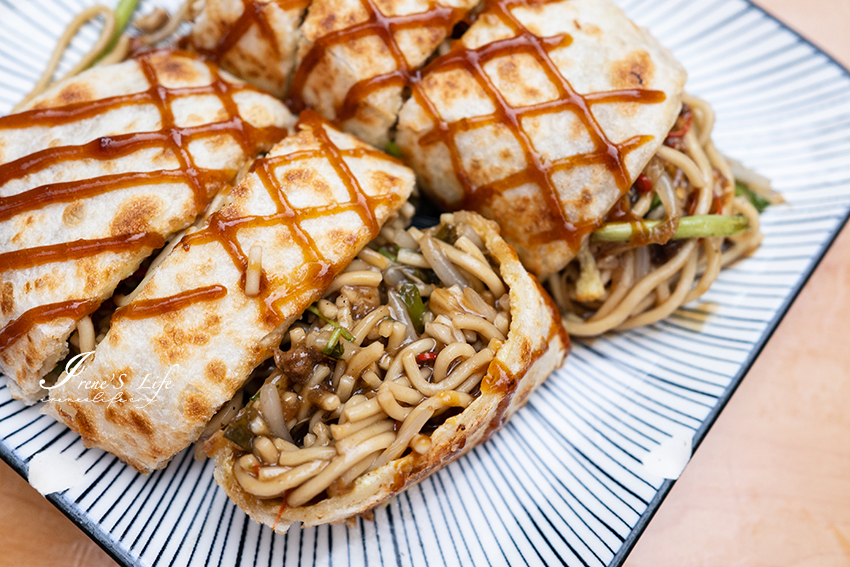
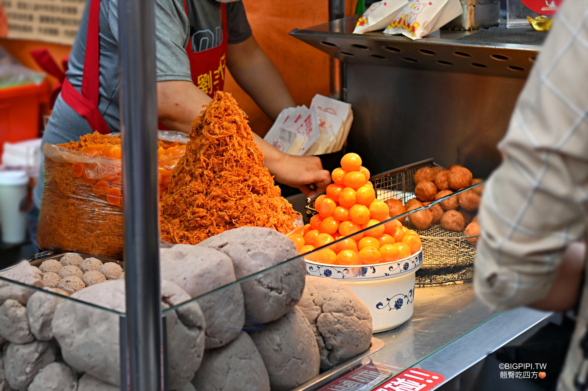

位於民生西路、南京西路與重慶北路中間路段的寧夏觀光夜市，被譽為「台北人的胃」，囊括了各種道地傳統台灣小吃，以及異國小吃料理等等。
寧夏夜市，起源於日據時期的圓環，原所在地為下奎府町，二次世界大戰後，命名為「寧夏街」，後來改為「寧夏路」。在淡水線鐵路開通後成為攤販聚集地，見證了大稻埕的繁華璀璨年代。
私心推薦店家
魏祥記純糖麻糬

經營60年，夏天賣燒麻糬冰、冬天賣燒麻糬、花生湯。
用糖水煮麻糬是傳統的客家吃法，燒麻糬冰則是將麻糬剪成小塊， 裹上芝麻糖粉、花生粉， 鋪在加了糖水與煉乳的剉冰上，冰涼 Q 彈。
蓮飲料吧

甘蔗汁是精選埔里紅甘蔗，榨汁後急速冷凍運送，在甘蔗汁內加入楊桃、養樂多或鮮奶，融合了甘蔗香與牛奶的濃郁，口味獨特又好喝。
山東赤肉蒸餃

在 50 年前創立。赤肉蒸餃之所以好吃，是使用豬後腿肉做餡，沒有肥肉，而且絕不用過夜餡，每天將新鮮的肉剔筋後才做成絞肉，加入高麗菜、純麻油。酸辣湯以豐富的木耳、筍絲、紅蘿蔔、豆腐、雞蛋和熬煮，調味恰到好處。
鴻記鐵板燒蔥餅捲

將中式的蔥油餅與鐵板燒結合而成的創意美食小吃。招牌口味是將搭配洋蔥的鐵板牛、羊、豬、雞，連同醬汁包在傳統蔥油餅內，既飽滿又美味，也同時研發許多口味的黃金燒麵捲、培根菜捲、海鮮捲。
劉芋仔炸芋頭

芋頭控一定要品嘗招牌爆漿芋，融合港式小點流沙包元素，由鬆軟綿密的芋泥包裹鹹蛋黃入鍋油炸，香甜芋頭與鹹蛋黃交織的鹹甜滋味與沙沙口感，美味無敵。